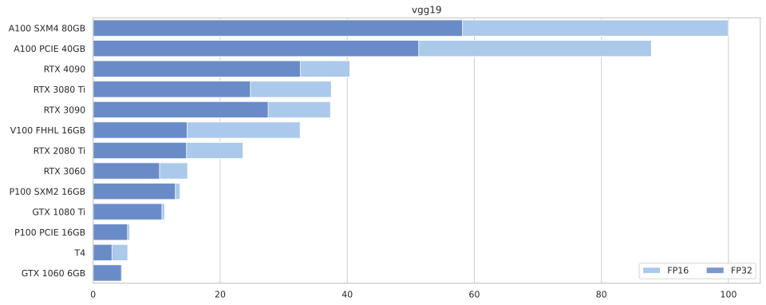
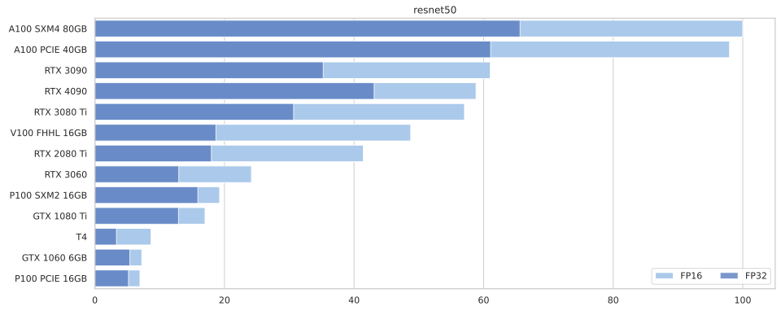
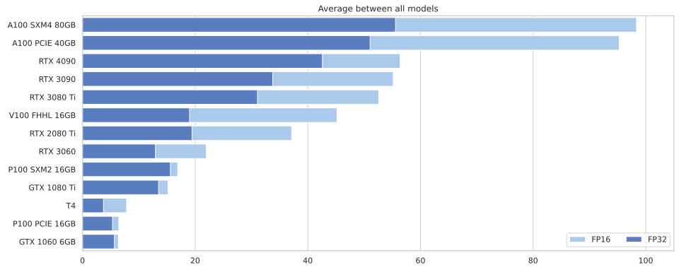

Imports
import wandb
import pandas as pd
from matplotlib import pyplot as plt
import seaborn as sns
import numpy as npIt’s fall 2022, and for the first time in years, buying a GPU for Deep Learning experiments does not sound too crazy.
Now, how do we pick one?
Keep in mind, performance depends on many factors, not least your CPU and often SSD.
For experiments, you might be better off with 2 cheaper GPUs - one to run in background, the other used interactively.
import wandb
import pandas as pd
from matplotlib import pyplot as plt
import seaborn as sns
import numpy as npI ran the benchmark on a variety of GPUs from vast.ai. The results are automatically synced to Weights & Biases.
sns.set_theme(style="whitegrid")
sns.set_color_codes("pastel")
api = wandb.Api()
runs = api.runs("xl0/ready-steady-go")
summaries = [ dict(r.summary) | {"id": r.id} for r in runs if r.state == "finished"]
df = pd.DataFrame.from_records(summaries)
df = df[["device_name", "model", "bs", "fp16", "throughput"]]
df["fp16"] = df["fp16"].apply(lambda x: "FP16" if x else "FP32")
df = df.replace({"device_name" : {
"NVIDIA*": "",
"GeForce": "",
"Tesla": "",
"-": " "}}, regex=True)
df.dropna(inplace=True)
# For each model, normalize performance by top throughput.
for model in df.model.unique():
df.loc[ df.model == model, "throughput"] /= df.loc[df.model == model, "throughput"].max()
df["throughput"] *= 100# For each device+model+fp, get the index of the entry with the highest throughput.
max_bs_idx = df.groupby(["device_name", "model", "fp16"])["throughput"].idxmax()
for model in df.model.unique():
f, ax = plt.subplots(figsize=(15, 6))
tops = df.loc[max_bs_idx].query(f"model == '{model}'").sort_values("throughput", ascending=False)
sns.set_color_codes("pastel")
sns.barplot(ax=ax, data=tops.query("fp16 == 'FP16'"),
x="throughput", y="device_name", label="FP16", color="b", alpha=1)
sns.set_color_codes("muted")
sns.barplot(ax=ax, data=tops.query("fp16 == 'FP32'"),
x="throughput", y="device_name", label="FP32", color="b", alpha=0.8,
order=tops.query("fp16 == 'FP16'").sort_values("throughput", ascending=False).device_name)
ax.legend(ncol=2, loc="lower right", frameon=True)
ax.set(ylabel=None, xlabel=None, title=model)


f, ax = plt.subplots(figsize=(15, 6))
tops = df.loc[max_bs_idx].sort_values("throughput", ascending=False)
# tops
fp16s = df.loc[max_bs_idx].query("fp16=='FP16'")
grouped = fp16s.groupby(["device_name"], as_index=False)["throughput"]
display_order = grouped.mean().sort_values("throughput", ascending=False)
sns.set_color_codes("pastel")
tt= sns.barplot(ax=ax, data=tops.loc[tops.fp16.eq('FP16')],
x="throughput", y="device_name", label="FP16", color="b", errwidth=0,
order=display_order.device_name)
# f, ax = plt.subplots(figsize=(15, 6))
sns.set_color_codes("muted")
sns.barplot(ax=ax, data=tops.loc[tops.fp16.eq('FP32')],
x="throughput", y="device_name", label="FP32", color="b", errwidth=0,
order=display_order.device_name)
ax.legend(ncol=2, loc="lower right", frameon=True)
_ = ax.set(ylabel=None, xlabel=None, title="Average between all models")